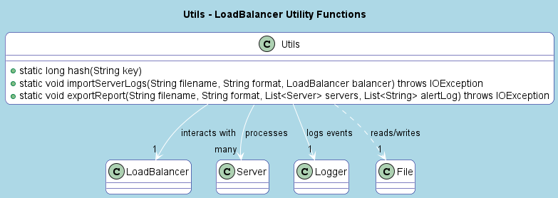

Package util
Class Utils
java.lang.Object
util.Utils
Utility class providing helper methods for the LoadBalancerPro system.
This class contains static methods for hashing keys, importing server logs, and exporting reports.
It supports both CSV and JSON formats for data import/export and includes logging for debugging and tracking.
Key Features:
- Generates hash values for keys using MD5 or fallback to default hashCode.
- Imports server logs in CSV or JSON format to populate a
LoadBalancer. - Exports server reports and alerts in CSV or JSON format.
- Uses Log4j for structured logging of operations.
UML Diagram:

-
Constructor Summary
Constructors -
Method Summary
Modifier and TypeMethodDescriptionstatic voidExports a report of server metrics and alerts to a file.static longGenerates a hash value for a given key using the MD5 algorithm.static voidimportServerLogs(String filename, String format, LoadBalancer balancer) Imports server logs from a file into aLoadBalancer.
-
Constructor Details
-
Utils
public Utils()
-
-
Method Details
-
hash
Generates a hash value for a given key using the MD5 algorithm. If MD5 is unavailable, falls back to the key's defaulthashCode.- Parameters:
key- the string key to hash- Returns:
- a long hash value for the key
-
importServerLogs
public static void importServerLogs(String filename, String format, LoadBalancer balancer) throws IOException Imports server logs from a file into aLoadBalancer. Supports CSV and JSON formats. For CSV, each line represents a server with fields for server ID, CPU usage, memory usage, disk usage, capacity (optional), and cloud instance status (optional). For JSON, the file should contain an array of server objects. Logs the import process using Log4j.- Parameters:
filename- the name of the file containing server logsformat- the format of the file ("csv" or "json")balancer- theLoadBalancerto add servers to- Throws:
IOException- if an I/O error occurs while reading the fileIllegalArgumentException- if the format is unsupported
-
exportReport
public static void exportReport(String filename, String format, List<Server> servers, List<String> alertLog) throws IOException Exports a report of server metrics and alerts to a file. Supports CSV and JSON formats. For CSV, the report includes a timestamp, server metrics (ID, CPU usage, memory usage, disk usage, capacity, load score, health), and alerts. For JSON, the report is structured as a JSON object with a timestamp, array of servers, and array of alerts.- Parameters:
filename- the name of the file to write the report toformat- the format of the report ("csv" or "json")servers- the list ofServerobjects to include in the reportalertLog- the list of alert messages to include in the report- Throws:
IOException- if an I/O error occurs while writing the fileIllegalArgumentException- if the format is unsupported
-